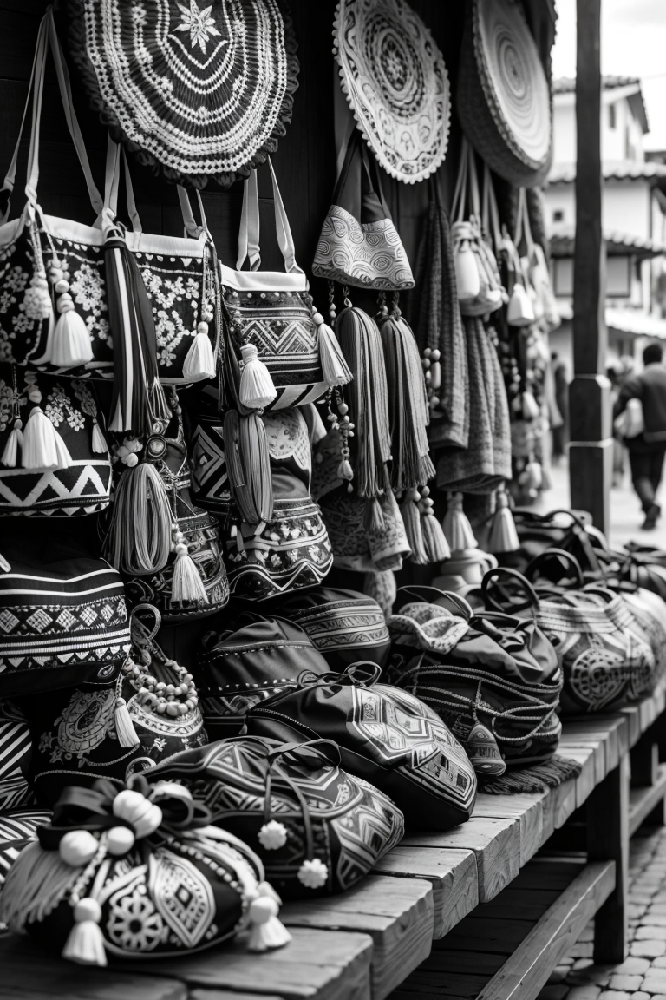
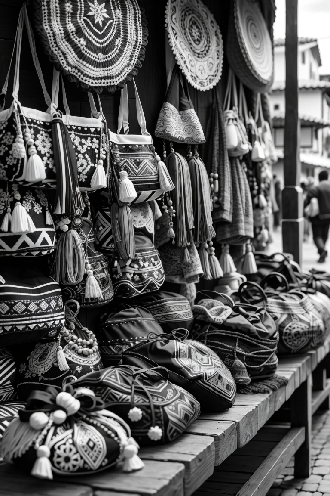
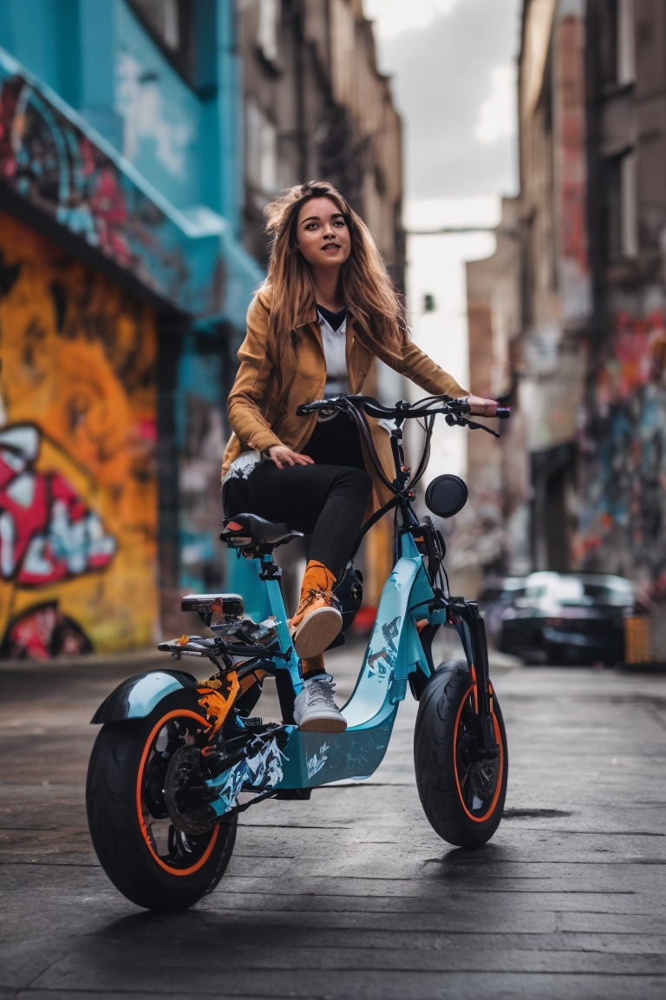

Acontecimientos Importantes
Tradición y Encanto
La artesanía en Bogotá es una expresión cultural que preserva tradiciones y refleja la identidad de la ciudad. Además de su valor cultural, la artesanía tiene un impacto económico importante al generar empleo y estimular el turismo local. Los productos artesanales únicos y auténticos son atractivos para los visitantes, lo que impulsa la economía y promueve el comercio local. Además, la artesanía de Bogotá ha ganado reconocimiento internacional, lo que abre oportunidades de exportación y comercio global. La valoración y apoyo a la artesanía son fundamentales para mantener viva la tradición y el legado cultural de Bogotá.
Convierte tu visita a Bogotá en una experiencia inolvidable al explorar su fascinante mundo de la artesanía local. Cada objeto artesanal que encuentres representa no solo un bello objeto hecho a mano, sino también una ventana hacia las tradiciones arraigadas y la identidad de la ciudad. Desde los detallados tejidos de las comunidades indígenas hasta las delicadas cerámicas inspiradas en la naturaleza y la vida urbana, cada pieza cuenta una historia cautivadora. Al adquirir estas obras únicas, no solo te llevas un tesoro tangible, sino que también contribuyes directamente al apoyo de artesanos locales y a la promoción de la economía creativa de Bogotá.


 

Energía en Movimiento: Aumenta el Uso de Vehículos Eléctricos en la Ciudad
La Movilidad eléctrica crece un 10% y mujeres compran la mitad de los vehículos.

Una faceta interesante de esta tendencia es la destacada participacionb de las mujeres en este panorama en expansión. Las estadísticas revelan que las mujertes han adquirido el 50% de los vehículos eléctricos, señalando un canmbio cultural hacia la adopción de tecnologías limpias y sostenibles en la esfera de la movilidad. Este aumento de la presencia femenina es el sector no solo subraya la equidad de género, sino que también refleja un compromiso colectiuvo hacia un futuro más ecológico yu consciente del medio ambiente.
Si quieres conocer otros medios de trasnporte da click en: